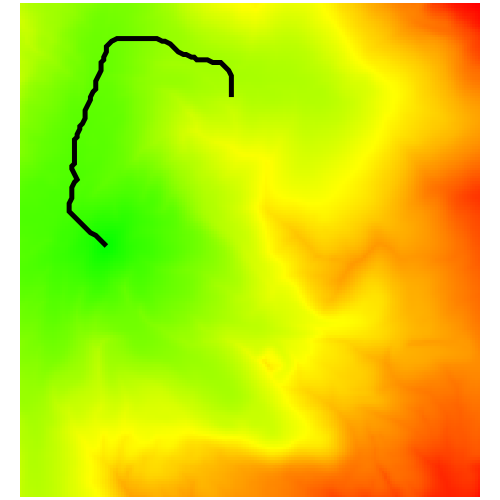
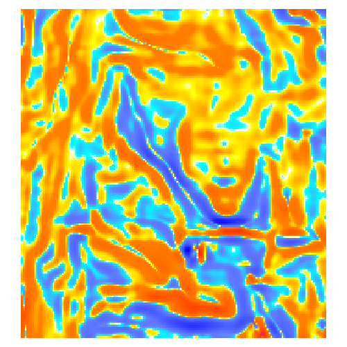
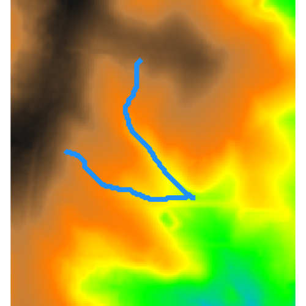
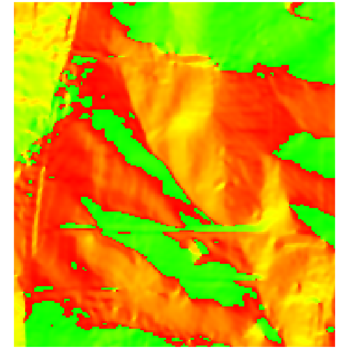
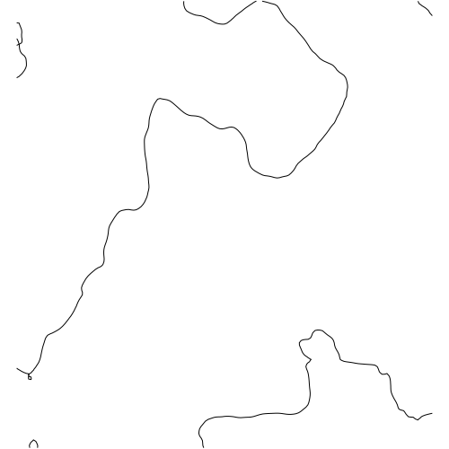
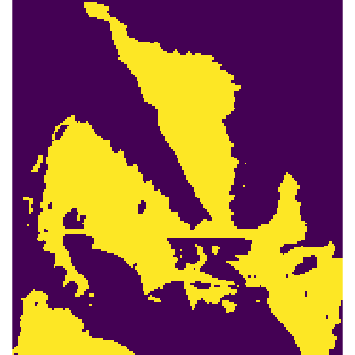
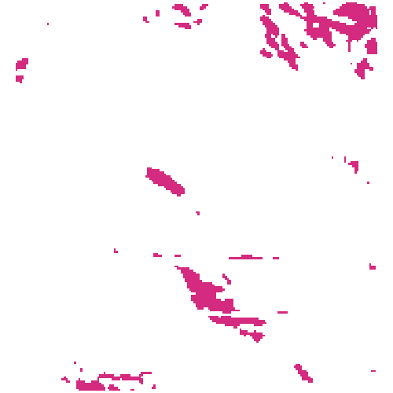
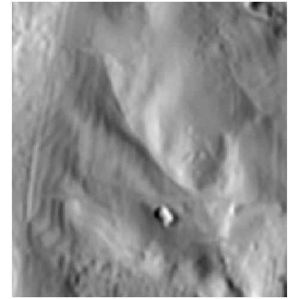

Created by Annie.
Map LCP, and the 2m viewshed from the end of the path.

Created by Christopher Dunstan.
Calcuate curvature of landscape.

Created by Anna Petrasova.
Place markers to see where water would flow from that site given the current topography.

Created by Margaret Lawrimore.
Change topography and observe changes in slope and aspect.

Created by Louis Goodall.
Change topography and observe changes in vectorised contour line.

Created by Annie.
Evaluate viewshed from 2m at specified location.

Created by Andrew Shannon.
Change topography and identify steep (>8%) north-facing slopes.

Created by SReckling.
Observe changes in sun shadow on 02/22/22 at 10:30am.
